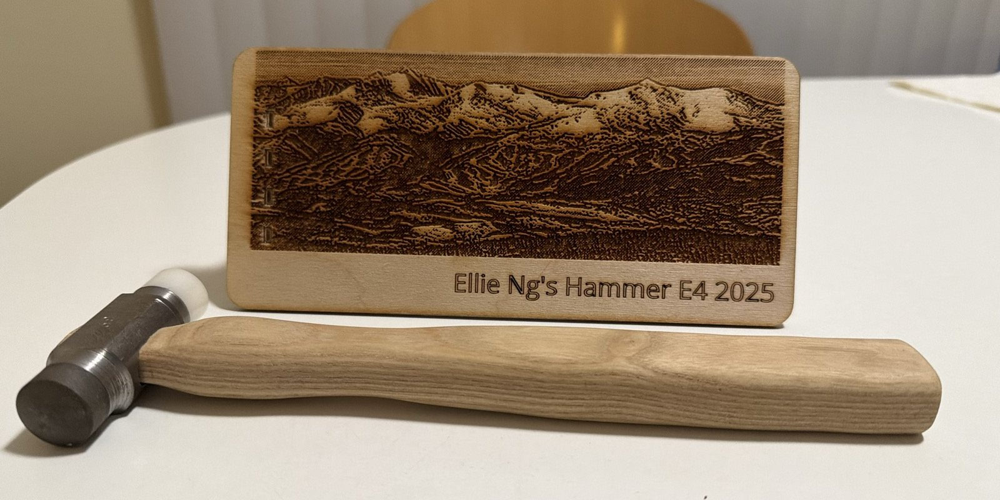

Overview
I machined a six-part hammer from raw bar stock and an oak blank, working from a set of engineering drawings and a process router that lays out every operation in order. The project was practice on nearly every machine in the shop: the lathe and mill for the steel parts, bandsaws, a laser cutter and a router table for the handle, and heat-treating ovens for the hard face.
The parts had to fit together without adjustment. The hard face press-fits into the head, the soft face screws on, and the handle is wedged through a milled slot, so every part had to come out within tolerance.

Working from the drawings and process router
Each part had its own engineering drawing, with dimensions and GD&T callouts for the features that mattered most, plus an assembly drawing showing how the six parts fit together. I followed a process router for each part: an ordered list of operations giving the machine, tooling, speeds and feeds, and what to watch for at each step. For the steel head, that meant facing, turning, drilling, tapping and reaming on the lathe, then milling the flats and slot. I read each callout off the drawing, measured as I cut, and used the router to plan when to rough, when to take a light finishing pass, and when to stop and check against the mating part.
Key specifications
The drawings use geometric dimensioning and tolerancing, so features are controlled by position and perpendicularity relative to datums, not just by size. These were the tightest features to hit:
What I learned
Reading drawings
Interpreting GD&T callouts like position at maximum material condition, datums and feature control frames, and turning them into measurements I could check at the machine.
Planning for tolerance
Roughing close, then taking a light finishing pass, and measuring the mating part before cutting, as I did for the press fit, instead of trusting the nominal number.
Shop practice
Choosing speeds and feeds, peck drilling, fixturing parts securely, heat treating safely, and knowing when to stop sanding.